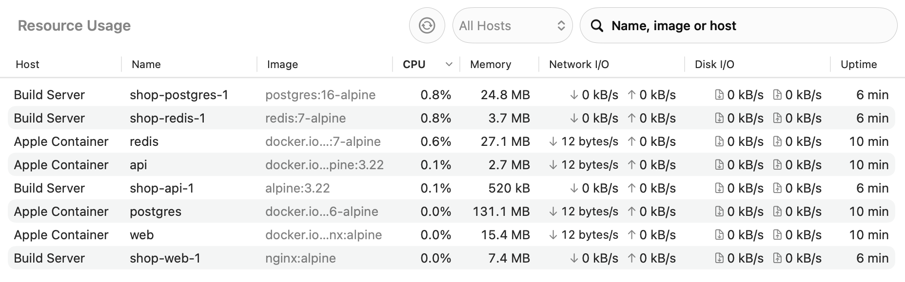

Maci rakendus Apple containerile ja Dockerile
Gantry on tasuta avatud lähtekoodiga Maci rakendus Apple'i container-tööriistale ja Dockerile, kohalikult ja SSH kaudu. Käitage apple/containeris konteinereid, Kubernetese klastreid, masinaid ja Compose'i projekte ühest aknast, oma Dockeri hostide kõrval. Tasuta Docker Desktopi ja OrbStacki alternatiiv Macile.
Gantry 0.29.0 · macOS 26+ · Apple'i kiip & Intel · MIT-litsents · 28 keelt · MCP-server kaasas

Käsud ja juhtelemendid
Apple'i container-tööriist ja Docker on käsureatööriistad. Igal selle tabeli käsul on Gantrys juhtelement.
- container
- docker
- docker compose
- kubectl
| Käsk | Gantrys |
|---|---|
container run, container create | Leht Uus konteiner ja Kiirkäivitus: tõmmis, nimi, käsk, pordid, keskkond, köited, DNS-domeen, kohandatud tuum ja buutimisargumendid; Kleebi käsk… loeb rea docker run või container run |
container start, stop, kill, delete, prune | Tööriistariba, paremklõpsu menüü ja menüüriba paneel |
container logs | Vahekaart Logid: reaalajas jälgimine, regex-otsing, tasemefilter, ANSI-värvid; Ekspordi logid… salvestab nähtavad read |
container stats | Vahekaart Statistika, juhtpaneeli minigraafikud ja ressursikasutuse tabel |
container exec | Vahekaart Terminal (interaktiivne shell) ja vahekaart Protsessid |
container inspect | Vahekaardid Ülevaade ja Uuri; Ekspordi Compose'ina… teeb konfiguratsioonist Compose'i faili |
container copy | Vahekaart Failid: allalaadimine ja Finderisse lohistamine (konteiner peab olema käivitatud) |
container image pull, tag, delete, prune, inspect | Tõmmised: tõmbamine koos edenemisega, sildistamine, eemaldamine, puhastamine, uurimine; Skanni turvaauke… Trivy või Grype'iga |
container build | Koostab Compose'i faili build:-teenused; jaotis Koostamised loetleb Gantry käivitatud koostamised |
container machine create, run, stop, delete, set-default, set, inspect | Masinad: loomine, käivitamine, peatamine, kustutamine, vaikimisi masin, CPU-d ja mälu, shell, uurimine, Ava VS Code'is |
container cluster create, list, delete, write-config, load-image | Klastrid: Kubernetese klastrid, töösõlmede suurused ja jagatud tõmmisehoidla (1.7), sõlmed, kubeconfig, Sirvi ressursse, Laadi klastrisse (1.5 ja 1.6) |
Käsku compose pole | Compose'i käivitaja: käivitage docker-compose.yml Finderist, menüüst Fail või lohistades |
Konteinerid
Looge, käivitage, avage ja muutke konteinereid igas hostis.
- container run
- docker exec -it
- docker cp
- docker port
- Kleepige
docker run - Kleepige käsk
docker run,podman runvõicontainer runja Gantry täidab vormi Uus konteiner ning loetleb lipud, mida see kasutada ei saa. Kopeerige mis tahes konteiner tagasi käsuna või salvestage see retseptina. Kuidas see töötab - Sisseehitatud exec-terminal
- Täielik terminaliemulatsioon igasse töötavasse konteinerisse, kohalikku või kaugesse – värviteemadega (System, Solarized, Dracula, Nord).
- Failibrauser lohistamisega
- Sirvige konteineri failisüsteemi, liigutage faile sisse ja välja ning lohistage terveid kaustu otse Finderist – nii Dockeri kui ka apple/containeri hostides.
- Ava brauseris & suuna edasi
- Üks klõps avab avaldatud pordi. SSH-hostide pordid tunneldatakse automaatselt aadressile
localhost– ja kui port on hõivatud, valib Gantry vaba pordi, mida saate muuta. - Jaga internetis
- Üks klõps avab avaldatud pordi Cloudflare Tunneli kaudu. Gantry installib
cloudflared-i teie eest ja annab kiirtunneli (kontot pole vaja,*.trycloudflare.comURL) või nimega tunneli teie oma domeenil – sobib arenduse eelvaateks, webhookiks või selleks, et AI-agent jõuaks teie Maci konteinerini. - Võtmerõnga saladused keskkonnas
- Hoidke paroole ja pääsutõendeid macOS-i võtmerõngas (Seaded → Saladused) ja kasutage neid keskkonnamuutujatena vormides Uus konteiner ja Kiirkäivitus. Vorm näitab
keychain:NAME, mitte väärtust, ja Gantry loeb väärtuse alles konteineri loomisel. Compose'i eksport, retseptid ja Kopeeri käsuna kirjutavad nime, mitte väärtust. - Toimingud mitmega korraga
- Valige mitu konteinerit, tõmmist, köidet või võrku ning käivitage, peatage, taaskäivitage või eemaldage need ühe sammuga, koos edenemise ja iga üksuse aruandega.
- Statistika reaalajas
- CPU, mälu, võrk & ketta I/O reaalajas graafikutena, mõõdetuna iga sekundi järel.
- Konteinerid välisel kettal
- Teisaldage kõik apple/containeri andmed välisele kettale, hoidke köiteid enda valitud kettal ja saage selge hoiatus, kui see ketas pole ühendatud. Loe juhendit

Tõmmised ja koostamine
Tõmmake, koostage, skannige ja eemaldage tõmmiseid.
- docker build
- docker pull
- trivy image
- docker system prune
- Koosta & tõmba tõmmiseid
- Lohistage Dockerfile aknasse, et koostada see reaalajas logiga, või tõmmake viite järgi ja jälgige iga kihi edenemist. Lisage silte, puhastage ja vaadake kihtide ajalugu. Märk tähistab tõmmiseid, mis on koostatud hostist erinevale protsessoriarhitektuurile.
- Koostamiste ajalugu
- Igal hostil on jaotis Koostamised: koostamised sammude, vahemälutabamuste ja logiga. Gantry säilitab enda käivitatud koostamised koos koostamisargumentide nimedega, kuid ilma nende väärtusteta. Dockeri hostides loeb see ka käsu
docker buildx historyandmeid (buildx 0.23.0 või uuem). apple/container koostamiste ajalugu ei säilita, nii et seal näete Gantry käivitatud koostamisi. - Tõmmiste skannimine Trivy või Grype'iga
- Valige tõmmisel Skanni turvaauke…. Gantry käivitab teie installitud Trivy (0.50.0 või uuem) või Grype'i (0.74.0 või uuem), näiteks Homebrew' kaudu installitu, ja rühmitab leiud taseme järgi kriitilisest kuni teadmatuni. Ekspordi SBOM kirjutab CycloneDX-i või Trivyga SPDX-i. See töötab apple/containeris, kohalikus Dockeris ja SSH kaudu Dockeris; SSH kaudu skannib Gantry sildiga tõmmise registris olevat koopiat.
- Privaatsed registrid
- Tõmbamine kasutab
docker login-i, mille olete juba teinud – Gantry leiab mandaadid failist~/.docker/config.json, mandaadiabilistest ja võtmerõngast nii loomisel, Kiirkäivituses kui ka Compose'is. - Vabasta ruumi
- Üks paneel näitab, mis võtab ruumi – rippuvad tõmmised, peatatud konteinerid, kasutamata köited, koostamise vahemälu – koos suurustega ning puhastab neid ükshaaval või kõiki korraga. apple/containeris käivitab see ka käsu Kärbi ketast.
Compose
Käivitage docker-compose.yml Dockeris või apple/containeris ja looge see töötavatest konteineritest.
- docker compose up -d
- docker compose down
- docker compose logs -f
- Compose igas hostis
- Konteinerid rühmitatakse Compose'i projekti järgi. Käivitage Compose'i fail igas hostis – kohalikus Dockeris, SSH kaudu või apple/containeris – sisseehitatud YAML-redaktoriga; käivitaja kohandub iga mootoriga.
- Eksport Compose'ina
- Valige ühel või mitmel konteineril Ekspordi Compose'ina… ja saate faili
docker-compose.ymlportide, haakepunktide, võrkude, taaskäivituspoliitika, seisukontrolli, piirangute ja muuga. Saladustena näivad väärtused muutuvad kujule${NAME}, kui te neid ei kaasa. apple/containeri hostides hoiatab Gantry lippude eest, mida Compose väljendada ei saa. Kuidas see töötab
Kubernetes
Sirvige kubeconfig-faili iga konteksti või looge apple/containeriga klaster.
- kubectl get pods -A
- kubectl logs -f
- kubectl port-forward
- container cluster
- Kubernetese brauser
- Sirvige mis tahes kubeconfigi konteksti podisid, Deploymente, StatefulSete, DaemonSete, teenuseid, Ingresse, ConfigMape, saladusi, sõlmi ja sündmusi. Jälgige podi logisid, avage shell, suunake porti, skaleerige, taaskäivitage juurutus ja rakendage YAML. Gantry suhtleb Kubernetese API-ga ise, seega on käsuga
container cluster createloodud klaster kohe sirvimiseks valmis, ilma et peaksite midagi muud installima:kubectl-i pole vaja. - Kubernetese klastrid
- Looge Kubernetese klaster käsuga
container cluster: määrake juhttasandi ja töösõlmede suurus eraldi, valige CNI ning vaadake sõlmi, Kubernetese versiooni ja kubeconfigi konteksti. Klastri sõlmed on kaitstud juhusliku peatamise ja kustutamise eest. Loe lähemalt

Hostid ja park
See Mac, Dockeri hostid SSH kaudu ja apple/container ühel töölaual.
- docker -H ssh://user@host
- docker context use
- docker stats
- Üks juhtpaneel kõigile hostidele
- Kohalik deemon, SSH-hostid ja apple/container ühel ekraanil – reaalajas CPU ja mälu minigraafikud, konteinerite olekute jaotus ja seisundiprobleemid, millelt pääseb otse süüdlaseni.
- Kaughostid SSH kaudu
- Tunneldab täpselt nagu
docker -H ssh://, kasutadesdial-stdio-t – ProxyJumpi vahehostid, mitme võtmega autentimine, automaatne taasühendamine. Serverisse pole vaja midagi installida, saladused on võtmerõngas. Ühe klõpsuga import failist~/.ssh/configja käsustdocker context ls. - Kõigi hostide ressursikasutus
- Üks sorditav tabel iga ühendatud hosti töötavate konteineritega: host, nimi, tõmmis, CPU, mälu, võrgu I/O, ketta I/O ja tööaeg. Filtreerige nime, tõmmise või hosti järgi või näidake ühte hosti. Konteineri avamiseks topeltklõpsake rida. Tabel kasutab näidiseid, mida Gantry niikuinii iga 5 sekundi järel võtab, nii et see ei ava uusi statistikavooge. Avage see külgribalt, klahvidega ⌘K või lingiga
gantry://open/usage.



Logid ja tõrked
Lugege, otsige ja eksportige logisid. Leidke põhjus, kui konteiner tõrgub.
- docker logs -f
- container logs
- docker events
- Reaalajas logid
- Reaalajas jälgimine, regex- või tavaotsing ⌘F-ga, tasemefilter (Error→Trace), ANSI-värvid, 50 000 rea puhver – ja projekti logid, kus terve Compose'i projekti logid on ühendatud.
- Logide eksport
- Ekspordi logid… (⇧⌘E) salvestab nähtavad read koos tasemefiltri, otsingu ja ajavahemikuga faili
.logvõi.txt. Kopeeri nähtavad read kopeerib need. Dockeri hostides saate lisada ajatemplid ja näidata ainult viimaseid kirjeid: alates viimasest 5 minutist kuni viimase ööpäevani. - Tõrketeavitused
- Natiivne teavitus, kui konteiner mõnes hostis jookseb kokku, mälu saab otsa või see muutub mitteterveks. Klõpsake teavitusel ja jõuate otse konteinerini – teie enda tehtud peatamised teavitust ei tekita.
- Selgita tõrget Apple Intelligence'i abil
- Valige kokku jooksnud konteineril või nurjunud toimingul Selgita tõrget…. Gantry saadab viimased logid ja andmed seadmesisesele mudelile, eemaldades keskkonnamuutujate väärtused ja saladustena näiva teksti, ning näitab tõenäolist põhjust, tõendeid ja järgmisi samme. Pikad logid võivad minna Private Cloud Compute'i (macOS 27). Paneel näitab täpselt, mida saadeti.
- Ekraanipildid funktsioonis Selgita tõrget
- Lohistage, kleepige või lisage funktsiooni Selgita tõrget kuni 3 pilti, näiteks vealehe ekraanipilt. Pildid jäävad sellesse Maci: neid loeb ainult seadmesisene mudel (macOS 27), mitte kunagi Private Cloud Compute.

macOS
Menüüriba, teavitused, Spotlight, Otseteed ja klaviatuur.
- ⌘K
- ⌥⌘P
- ⇧⌘E
- Osa macOS-ist
- Teavitused toimingutega Taaskäivita, Näita logisid ja Kopeeri viibana. Spotlight leiab konteinereid, Compose'i projekte ja hoste. Siri ja Otseteede toimingud, taristu seisundi vidin, Juhtimiskeskuse juhtelemendid apple/containeri teenuste või lemmikkonteineri jaoks ning
gantry://lingid skriptidele. - Edenemine menüüribal
- Menüüriba paneel näitab iga käimasolevat tõmbamist, koostamist ja Compose'i toimingut koos edenemisriba, valmis kihtide või teenuste, baitide, aja ja nupuga Tühista. Menüüriba ikoon näitab, mitu toimingut käib. Igal Compose'i projektil on Tõmba tõmmised ja Compose Down; Compose Down säilitab köited ja tõmmised.
- Käsupalett
- Vajutage ⌘K ja tippige. Üks otsing katab konteinerid, Compose'i projektid, tõmmised, köited, võrgud, masinad, klastrid ja hostid ning pakub toiminguid, nagu Käivita, Näita logisid ja Ava shell.
- Touch ID hävitavatele toimingutele
- Lülitage see sisse ja Gantry küsib enne konteineri eemaldamist või hosti kustutamist Touch ID-d – või teie sisselogimisparooli. Saladused on niigi võtmerõngas.
- Terminali teemad
- Valige sisseehitatud shellile teema System, Solarized Dark, Dracula või Nord – täielik esiplaani-, tausta- ja 16-värviline ANSI-palett, rakendub kohe.

Natiivne macOS-i GUI Apple containerile
Apple'i container-tööriist käitab Apple'i kiibil Linuxi konteinereid kergete virtuaalmasinatena, kuid see tuleb ainult käsureatööriistana. Gantry on selle töölauarakendus: mis Docker Desktop on Dockerile, see on Gantry container-ile. See toetab kõiki container CLI versioone alates 1.0-st kuni soovitatud versioonini 1.7.1 ja lülitab iga funktsiooni sisse alles siis, kui teie installitud CLI seda toetab.
- container system start
- container machine
- container builder start
- container registry login
- Konteinerid, logid, statistika ja exec
- Looge, käivitage, peatage, sundpeatage ja puhastage; reaalajas logid, statistika, exec-terminal,
topja tar-eksport samas kasutajaliideses nagu teie Dockeri hostid. - Kubernetese klastrid
- Looge Kubernetese klaster käsuga
container cluster: määrake juhttasandi ja töösõlmede suurus eraldi, valige CNI ning vaadake sõlmi, Kubernetese versiooni ja kubeconfigi konteksti. Klastri sõlmed on kaitstud juhusliku peatamise ja kustutamise eest. Loe lähemalt - Kohalikud tõmmised klastris
- CLI 1.7-s lülitage sisse Kasuta kohalikke tõmmiseid (
--shared-image-store) ja podid käitavad teie koostatud või tõmmatud tõmmiseid ilma registrita. CLI 1.5-s ja 1.6-s paremklõpsake tõmmist ja valige Laadi klastrisse. - Selged vihjed, kui install on katki
- Kui klastriteenused ei vasta, ütleb Gantry teile põhjuse. Homebrew-versioon ilma klastriteenusteta saab lingi allkirjastatud installerile; muul juhul kuvatakse nupp Taaskäivita teenused.
- Konteinermasinad VS Code'is
- Looge, käivitage ja peatage
container machineLinuxi keskkondi, määrake CPU-d ja mälu, avage shell või avage masin VS Code'is Remote-SSH kaudu. - Pesastatud virtualiseerimine ja kohandatud tuumad
- Buutige masin pesastatud virtualiseerimisega (M3 või uuem) või oma tuumaga. Buutige konteinereid kohandatud tuumaga ja täiendavate buutimisargumentidega.
- Apple containeri Compose
- apple/containeril pole käsku
compose. Gantry käitab teiedocker-compose.yml-i: koostab, loob võrgu ja köited ning käivitab teenuseddepends_onjärjekorras. Teenuste nimed lahendatakse võrgu DNS-aliaste kaudu. - Võrgu DNS-aliased
- Konteineraliased, alampuualiased (nt
.gateway) ja lühinimed, kui vaikimisi DNS-domeen on määratud. Iga konteiner saab marsruuditava IP-aadressi ja hostinimename.domain. - Tõmmisekoostaja haldus
- Vaadake koostaja olekut, tõmmist, CPU-sid, mälu ja IP-d. Käivitage see CPU, mälu ja DNS-i valikutega, peatage või kustutage. Kui koostaja tõmmis on aegunud, pakub Gantry selle uuesti loomist.
- Registritesse sisselogimised
- Loetlege, lisage ja eemaldage
container registrysisselogimisi. Parool läheb CLI-le ainult stdin-i kaudu ja Gantry ei hoia sellest koopiat. - Tuuma installimine
- Installige soovitatud tuum, tuumafail või tar-arhiiv ja jälgige edenemist reaalajas. Gantry hoiatab, kui vaikimisi tuuma pole installitud.
- Teenused ja teenuste logid
- Käivitage, peatage ja taaskäivitage
containerteenused, võrrelge kliendi ja serveri versioone ning voogedastage teenuste logisid taseme, teenuse ja teksti järgi filtreerituna. - Süsteemiatribuutide redaktor
- Muutke
containersüsteemiatribuute failisconfig.toml. Gantry märgib muudatused, mis vajavad taaskäivitust, ja taaskäivitab teenused teie eest. CLI 1.7-s muudab see ka[container.dns]vaikeväärtusi: nimeserverid, otsingudomeenid ja valikud. - Tõmmisena salvestamine ja Kärbi ketast
- Salvestage konteiner tõmmisena (
container commit) ja vabastage kettaruumi käsuga Kärbi ketast (container clean), mis on ka paneelis Vabasta ruumi. - Failibrauser: üles- ja allalaadimine
- Sirvige konteineri faile, laadige need alla või lohistage Finderisse (
container copy) ning lohistage sisse faile või terveid kaustu. - Kiirkäivitus ja Finder
- Valige tõmmis, jagage kausta, määrake pordid ja valige domeen ning käivitage. Paremklõpsake Finderis Compose'i faili ja avage see Gantryga.
- Sildid, mis sisaldavad
= containerCLI lükkab tagasi sildiväärtused, milles on=. Gantry kodeerib need loomisel ja dekodeerib lugemisel, nii et väärtus nagua=bjääb puutumatuks.- Kõik hostid, kaks käituskeskkonda
- apple/containeri hostid on ühes juhtpaneelis teie kohaliku Dockeri ja SSH-hostide kõrval, samade minigraafikute, seisundi ja tõrketeavitustega.
- MCP-tööriistad agentidele
- Kaasasolev MCP-server annab agentidele sama ulatuse: konteinerid, masinad, klastrid ja
apple_*süsteemitööriistad teenuste, koostaja, registrite, atribuutide, logide ja tuumade jaoks.
Agendid
Kaasasolev MCP-server ja App Intents avavad iga hosti – ka SSH-hostid – Claude'ile, Otseteedele, Sirile ja skriptidele sama ulatusega nagu GUI: konteinerite loomine ja haldus, tõmmiste koostamine ja tõmbamine, köited ja võrgud, Compose up, apple/containeri masinad ja Kubernetese klastrid, apple_* süsteemitööriistad teenuste, koostaja, registrite ja tuumade jaoks, isegi pordi avamine Cloudflare Tunneli kaudu.
- claude mcp add gantry
$ claude mcp add gantry -- \
/Applications/Gantry.app/Contents/Resources/gantry-mcp
✓ MCP-server lisatud gantry
- Kopeeri viibana
- Vajutage mis tahes konteineril ⌥⌘P ja Gantry paneb lõikelauale kasutusvalmis silumisviiba – host ja kuidas sellega ühendust saada, MCP
host_idja tööriistad, konteineri täielik olek ning sümptomile vastav ülesanne. - MCP-tööriistad agentidele
- Kaasasolev MCP-server annab agentidele sama ulatuse: konteinerid, masinad, klastrid ja
apple_*süsteemitööriistad teenuste, koostaja, registrite, atribuutide, logide ja tuumade jaoks.
Väljalasked
- 0.29.0 · 0.28.0Kõik hostid ühes tabelis ja turvalisemad tõmmisedGantry 0.28.0 ja 0.29.0 lisavad kõigi hostide ühise tegevuste tabeli, koostamiste ajaloo, tõmmiste skannimise Trivy või Grype'iga, võtmerõnga saladused konteineri keskkonna jaoks ja ekspordi Compose'i. Saate eksportida logid oma filtriga, anda funktsioonile Selgita tõrget ekraanipildi ning jälgida tõmbamisi, koostamisi ja Compose'i käivitusi menüüribal.
- 0.27.0Kubernetes, Apple Intelligence ja ülejäänud macOSGantry 0.27.0 lisab Kubernetese brauseri, selgitab Apple Intelligence'i abil nurjunud konteinereid ning töötab koos Spotlighti, Siri, vidinate ja Juhtimiskeskusega. See toetab apple/container 1.7.1 ja sellel on uus kujundus, mis järgib Apple'i Human Interface Guidelines'i.
Rakenduse ülesehitus
Gantry suhtleb Docker Engine API ja Apple'i container CLI-ga. Gantry ei käita oma teenust.
- 100% natiivne SwiftUI
- Natiivne SwiftUI, mitte Electron. Rakendus kasutab macOS-i juhtelemente, fonti ja aknaid.
- Swift 6
- Kaasaegne, samaaegsusohutu koodibaas uusimal tööriistaketil.
- Otse Engine API
- Docker Unixi sokli kaudu, Docker CLI-d pole vaja. apple/container oma
containerCLI kaudu. - Automaatsed uuendused
- EdDSA-allkirjaga Sparkle'i uuendusvoog hoiab rakenduse ajakohasena, teid segamata.
Installimine
Laadige rakendus alla või installige see Homebrew'ga. Kontot pole vaja.
- brew install --cask getgantry/tap/gantry
- InstalligeKäivitage Homebrew cask või laadige väljalasete lehelt
.zipja lohistageGantry.appkausta Rakendused. - Esimene käivitusVeel notariseerimata – paremklõpsake & valige Ava või eemaldage karantiin käsuga
xattr -dr com.apple.quarantine /Applications/Gantry.app - Lisage hostKohalik Docker ilmub ise. Apple containeri jaoks lisage Apple Containeri host; Gantry pakub
containerCLI seadistamist. Agendid:claude mcp add gantry.
Küsimused
Milline on parim GUI Apple containerile?
Gantry on tasuta avatud lähtekoodiga natiivne macOS-i GUI, mis on loodud Apple'i container-tööriista (apple/container) jaoks. See katab konteinerite elutsükli, logid, statistika ja exec-terminali ning need CLI osad, kuhu teised GUI-d ei ulatu: Kubernetese klastrid (container cluster), konteinermasinad, tõmmisekoostaja, registritesse sisselogimised, tuumad, teenuste logid ja süsteemiatribuudid. See toetab CLI versioone 1.0 kuni 1.7.1 ja lülitab iga funktsiooni sisse alles siis, kui teie CLI seda toetab. Vaadake apple/containeri juhendit.
Mis on Apple container (apple/container)?
apple/container on Apple'i avatud lähtekoodiga tööriist Linuxi konteinerite käitamiseks Macis. Iga konteiner töötab oma kerges virtuaalmasinas, mis põhineb Apple'i raamistikul Virtualization. See vajab Apple'i kiibiga Maci ja tuleb käsureatööriistana nimega container, ilma töölauarakenduseta. Gantry lisab selle töölauarakenduse.
Kas Gantry toetab container clusterit ja Kubernetest?
Jah. apple/containeri hostis loob ja kustutab Gantry Kubernetese klastreid käsuga container cluster (CLI 1.6.1 ja 1.7; CLI 1.5.0 kuni 1.6.0 kasutavad käsku container k8s). Teie valite nime, töösõlmed, juhttasandi ja töösõlmede CPU-d ja mälu (1.7), sõlme tõmmise, CNI ning selle, kas sõlmed kasutavad teie kohalikke tõmmiseid (1.7). Gantry näitab sõlmi, kirjutab kubeconfigi ja avab klastri oma Kubernetese brauseris. Vaadake lehte Kubernetes apple/containeris.
Kas docker compose'i saab kasutada Apple containeriga?
Jah. apple/containeril pole käsku compose, seega teeb Gantry orkestreerimise container CLI kaudu: koostab build:-teenused, loob projekti võrgu ja nimega köited ning käivitab teenused depends_on järjekorras Compose'i standardsiltidega. Teenuste nimed lahendatakse võrgu DNS-aliaste kaudu. Avage docker-compose.yml Finderist, menüüst Fail või lohistades selle aknasse.
Kuidas avada konteinermasin VS Code'is?
Käivitage masin Gantrys ja klõpsake Ava VS Code'is. Gantry avab masina VS Code'is Remote-SSH kaudu, nagu Apple'i näites container-machine-vscode. Masina tõmmises peab töötama sshd ning installitud peavad olema VS Code ja laiendus Remote-SSH.
Milliseid apple/containeri versioone Gantry toetab?
Gantry vajab container CLI versiooni 1.0 või uuemat ja soovitab versiooni 1.7.1. See loeb installitud versiooni ja näitab ainult neid funktsioone, mida see versioon toetab, näiteks töösõlmede suurused ja jagatud tõmmisehoidla (1.7), tõmmisena salvestamine (1.6) ja Kärbi ketast (1.4). Kui CLI puudub või on vana, pakub Gantry juhendatud seadistamist.
Kas Gantryga saab Kubernetese klastrit sirvida?
Jah. Jaotis Kubernetes loetleb iga kubeconfigi konteksti podid, Deploymentid, StatefulSetid, DaemonSetid, teenused, Ingressid, ConfigMapid, saladused, sõlmed ja sündmused. Seal on podi logid, podi shell, pordisuunamised, skaleerimine, juurutuse taaskäivitamine, kustutamine ja Rakenda YAML. Gantry suhtleb Kubernetese API-ga ise, seega pole teil kubectl-i vaja. Vaadake juhendit Kubernetes Macis.
Mida saadab Selgita tõrget Apple Intelligence'ile?
Viimased logid ja konteineri andmed; keskkonnamuutujate väärtused ja saladustena näiv tekst eemaldatakse. Väikesed päringud töötavad seadmesisese mudeliga. Kui pikkade logide seade on sees (macOS 27), lähevad pikad logid Private Cloud Compute'i. Paneel näitab, mida saadeti. Soovitatud käsk avaneb Terminalis, kuid ei käivitu enne, kui vajutate klahvi Return. Ilma Apple Intelligence'ita pakub Gantry viipa, mille saate kopeerida mõnda teise TI-assistenti.
Kas Gantrysse saab kleepida docker run käsu?
Jah. Valige lehel Uus konteiner Kleebi käsk…. Gantry loeb käske docker run, docker create, podman run ja container run, täidab vormi ja loetleb põhjusega iga lipu, mida see kasutada ei saa. Vaadake juhendit Konteineri loomine docker run käsust.
Kas Gantry saab hallata apple/containeri koostajat, registreid ja tuuma?
Jah. apple/containeri hosti jaotis Süsteem käivitab, peatab ja kustutab tõmmisekoostaja CPU, mälu ja DNS-i valikutega; loetleb, lisab ja eemaldab registritesse sisselogimisi (parool läheb CLI-le ainult stdin-i kaudu); installib soovitatud tuuma, tuumafaili või tar-arhiivi; voogedastab teenuste logisid ja muudab süsteemiatribuute failis config.toml.
Kas Gantry on Docker Desktopi, OrbStacki või Podman Desktopi alternatiiv?
GUI osas jah. Gantry on tasuta natiivne macOS-i rakendus konteinerite, tõmmiste, köidete, võrkude, logide ja statistika haldamiseks. See on klient, mitte mootor: see kasutab Dockeri deemonit, mis teil juba töötab (Docker Desktop, OrbStack, Colima), või Apple'i container-tööriista ning lisab mitme hosti vaate, SSH-hostid ja MCP-serveri. Vt võrdlust.
Kas Gantry on tasuta?
Jah. Gantry on tasuta ja avatud lähtekoodiga MIT-litsentsi all. Pole tellimust, pole kontot ega piirangut hostide või konteinerite arvule.
Mida on Gantry käitamiseks vaja?
macOS 26 või uuemat Apple'i kiibi või Inteliga ning Dockeri deemonit (Docker Desktop, OrbStack, Colima vms) või Apple'i container-tööriista. apple/container ise vajab Apple'i kiipi, seega Inteliga Macis haldab Gantry ainult Dockeri hoste.
Kas Gantry töötab OrbStacki, Colima ja Docker Desktopiga?
Jah. Gantry suhtleb otse Docker Engine API-ga Unixi sokli kaudu, nii et see töötab iga deemoniga, mis selle API avab, sealhulgas OrbStacki, Colima ja Docker Desktopiga.
Kas Gantry saab hallata kaug-Dockeri hoste?
Jah. Gantry ühendub kaugdeemonitega SSH kaudu samamoodi nagu docker -H ssh://, toetades ProxyJumpi vahehoste, mitme võtmega autentimist ja automaatset taasühendamist. Serverisse pole vaja midagi installida ning saladusi hoitakse macOS-i võtmerõngas.
Kas Gantry teavitab, kui konteiner nurjub?
Jah. Gantry saadab natiivse macOS-i teavituse, kui konteiner jookseb kokku, mälu saab otsa või seisukontroll nurjub mõnes hostis: kohalikus, SSH- või apple/containeri hostis. Teavitusele klõpsates avaneb konteiner. Gantrys endas tehtud peatamised ja taaskäivitused teavitust ei tekita ning teavitused saab Seadetes välja lülitada.
Kas Gantry saab tõmmata privaatsetest registritest?
Jah. Dockeri hostides loeb Gantry mandaate failist ~/.docker/config.json (sama docker login, mille olete juba teinud), sealhulgas tekstisiseseid mandaate, mandaadiabilisi ja macOS-i võtmerõngast. apple/containeri hostides haldab see container registry sisselogimisi.
Kas Gantry abil saab kohaliku konteineri internetti jagada?
Jah. Üks klõps avaldatud pordil jagab selle Cloudflare Tunneli kaudu. Gantry installib vajadusel cloudflared-i ja käivitab seejärel kiirtunneli (Cloudflare'i kontot pole vaja, ajutine trycloudflare.com URL) või nimega tunneli teie oma hostinimel. Avalik URL kuvatakse pordi all koos avamise, kopeerimise ja peatamise nuppudega.
Kas Gantry on Electroni rakendus?
Ei. Gantry on natiivne rakendus, mis on tehtud SwiftUI ja Swift 6-ga. Kasutajaliides on saadaval 28 keeles: inglise, lihtsustatud hiina ja 26 Euroopa keeles, näiteks serbia keeles kirillitsas ja ladina kirjas. See järgib macOS-i süsteemikeelt.
Kuidas Gantry installida?
Käivitage brew install --cask getgantry/tap/gantry või laadige uusim väljalase alla GitHubist ja lohistage Gantry.app kausta Rakendused.
Kas AI-agendid saavad Gantryt juhtida?
Jah. Gantryga on kaasas MCP-server ja macOS-i App Intents, nii et Claude, Otseteed, Siri ja skriptid saavad igas hostis, ka SSH-hostides, sama ulatuse nagu GUI: konteinerid, tõmmised, köited, võrgud, Compose, apple/containeri masinad, Kubernetese klastrid, apple_* süsteemitööriistad (teenused, koostaja, registrid, atribuudid, logid, tuum) ja pordi jagamine. macOS 26-s ja uuemates küsib Selgita tõrget… ka Apple Intelligence'ilt, miks konteiner nurjus. Lisage MCP-server käsuga claude mcp add gantry -- /Applications/Gantry.app/Contents/Resources/gantry-mcp.